ideas de seba
indígenas libres autónomos
39
objetivo-personal hacer, por ej., desde Necochea hasta Pinamar, en el medio el Circuito Cerrado y a los costados ferrocarriles con turbinas
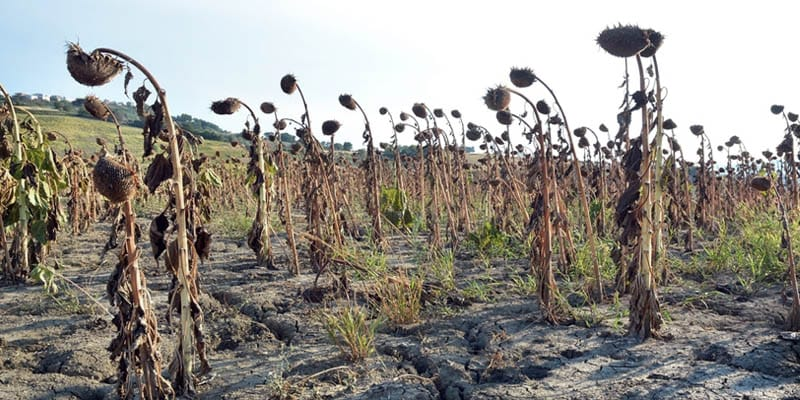
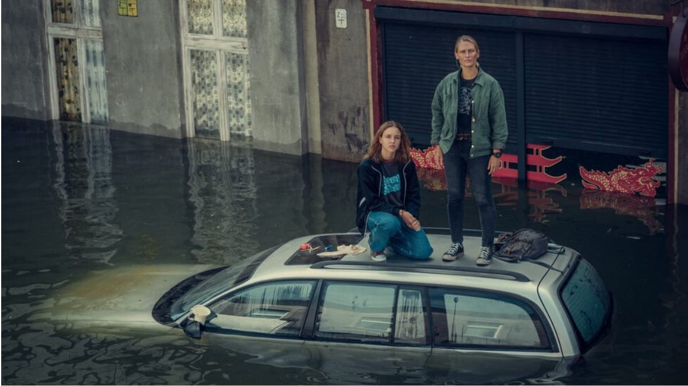
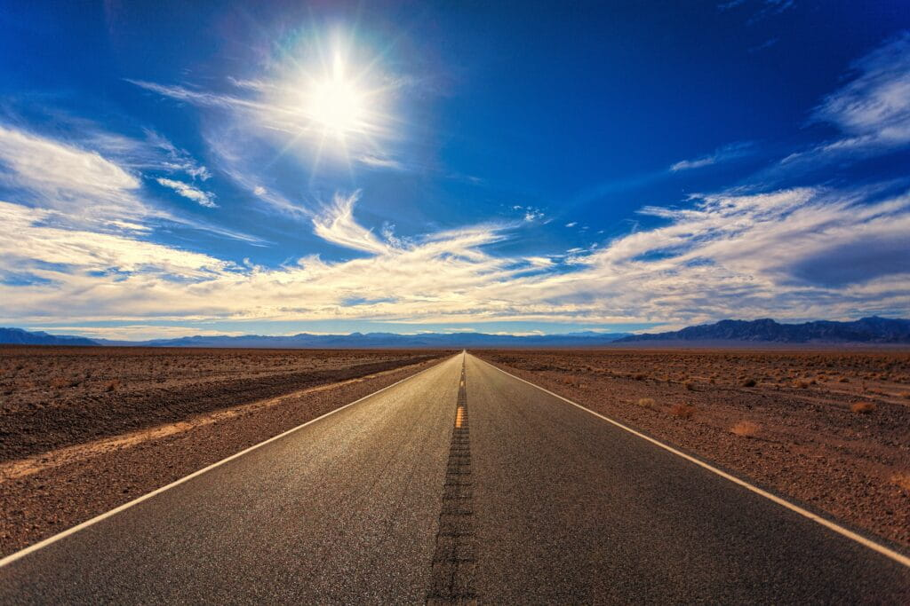

 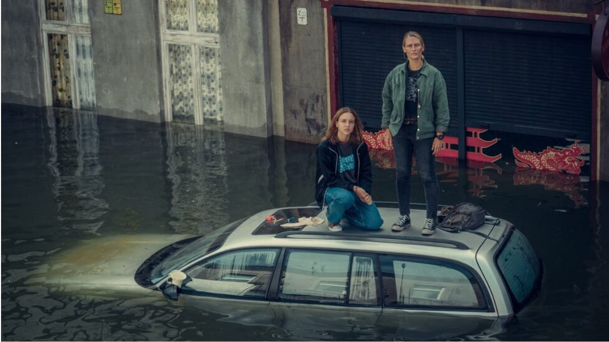
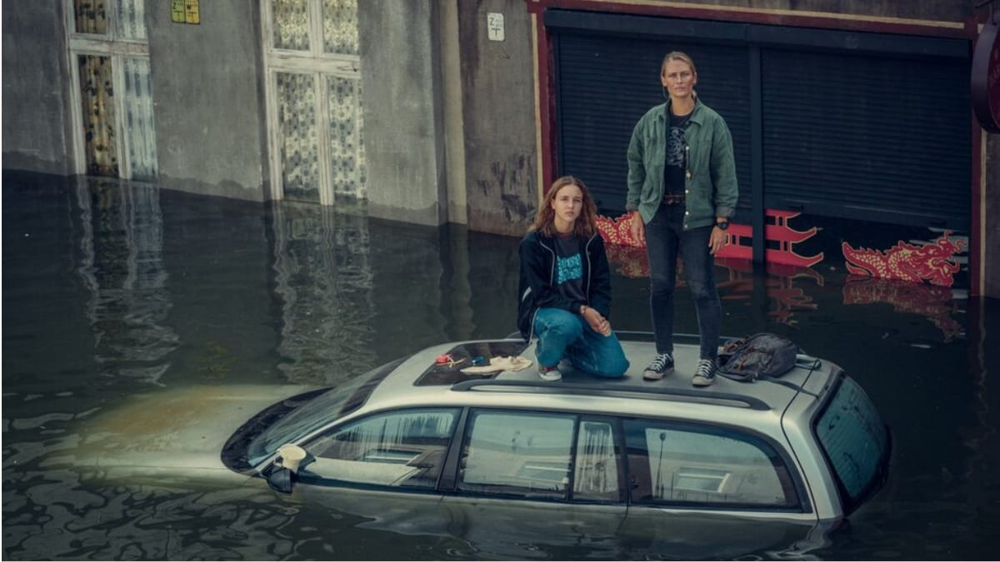

 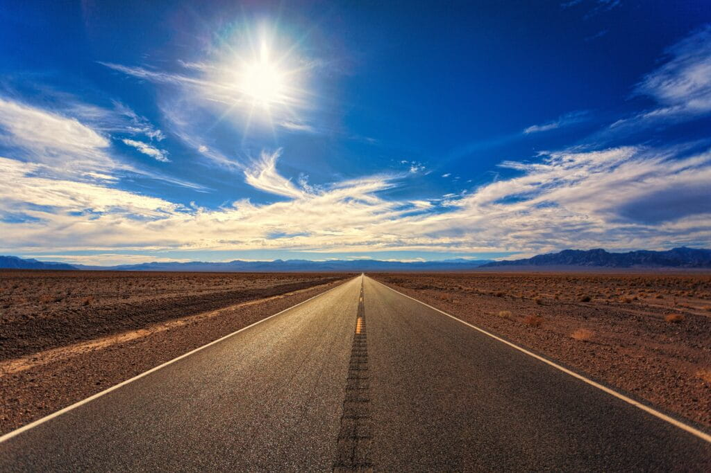
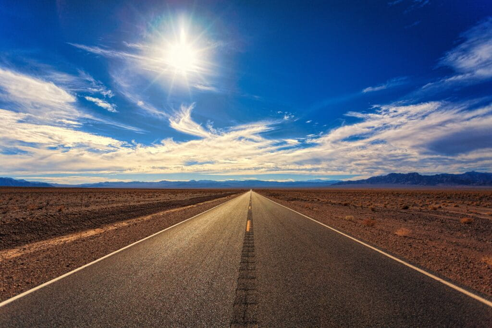
 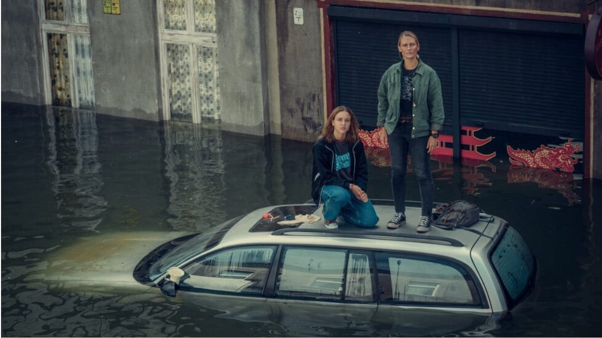
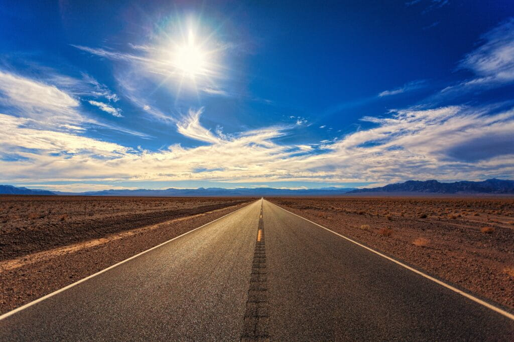
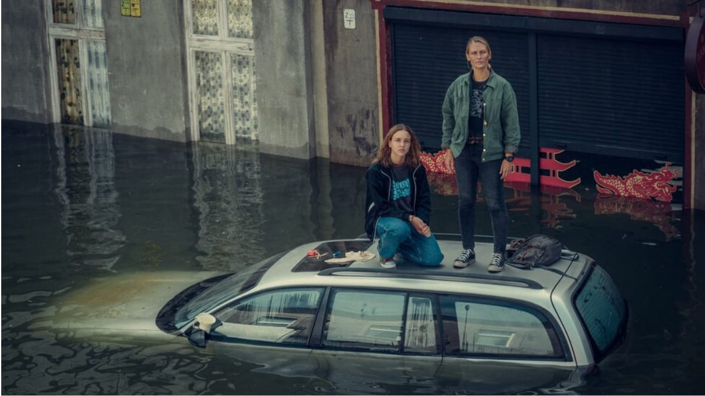
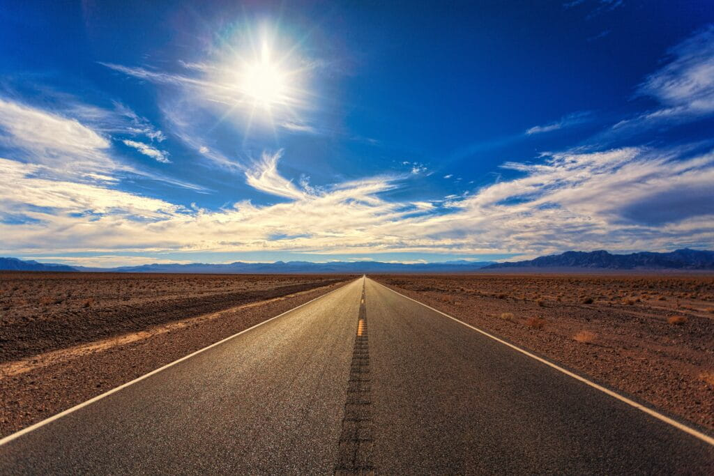
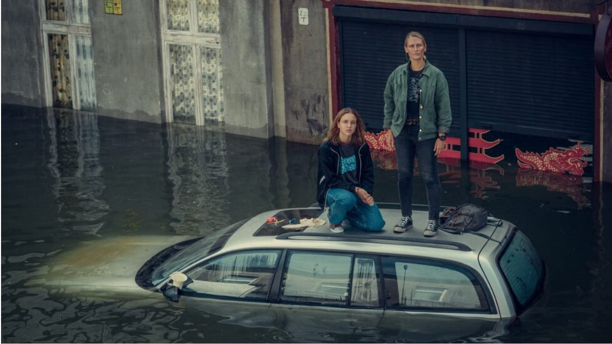
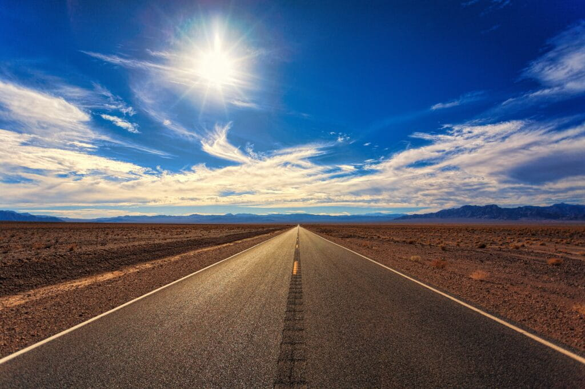
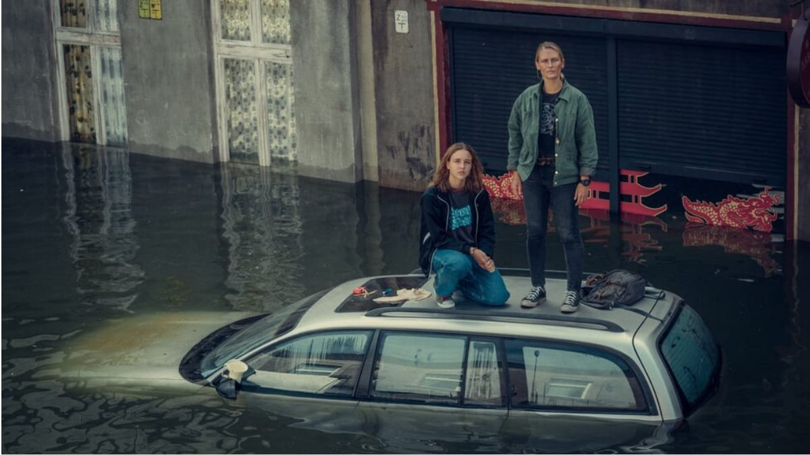
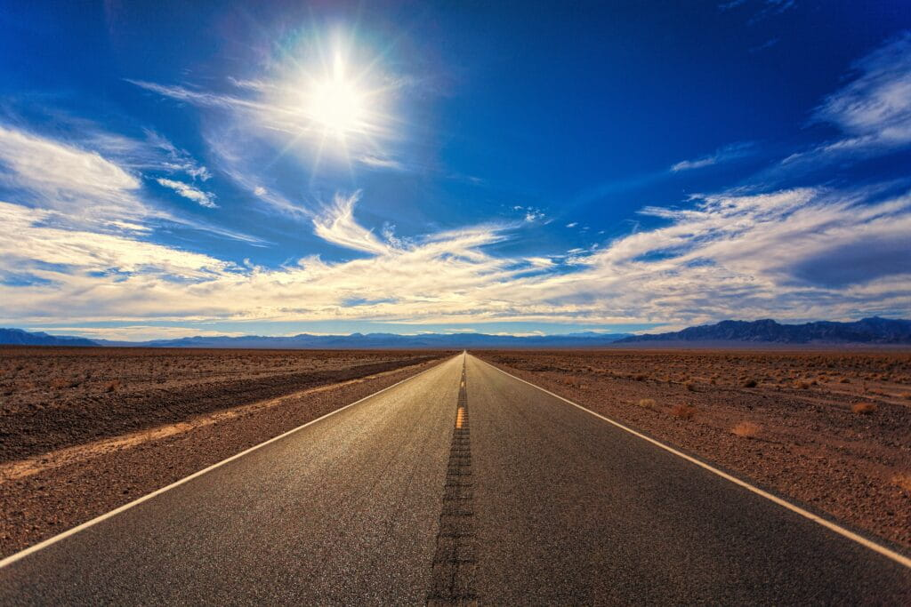